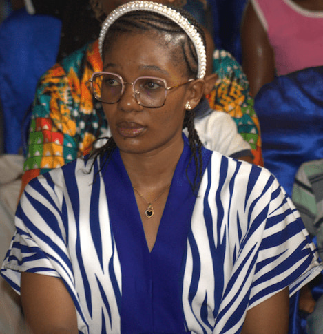

Samanta Ndetio Legue | WDD 130

My name is Samanta Ndetio Legue, and I am learning web design and development in WDD 130. I enjoy creating simple, clean, and user-friendly websites while improving my HTML and CSS skills step by step.
Course Information
This page contains information about my country and my journey in learning web development.